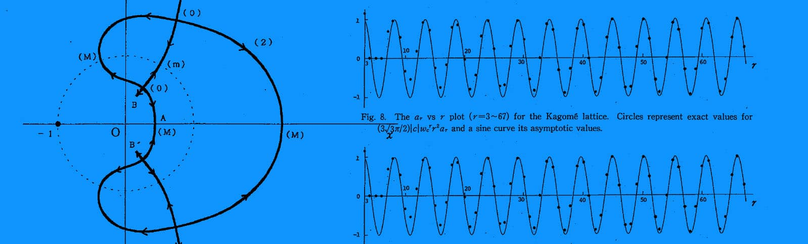

Zeros of Partition Function and High Temperature Expansion for the Two-Dimensional Ising Models
Ryuzo Abe, Tomonari Dotera and Takeshi Ogawa
rog. Theor. Phy. 85 (1991), pp.509-525
Distribution of zeros of partition function Z without magnetic field is studied for some two-dimensional Ising models with nearest-neighbor interactions. The distributions are presented graphically for the honeycomb, triangular, diced and Kagome lattices. It is shown that an asymptotic form of high temperature expansion for lnZ is closely related with the distribution of zeros. The expansion coefficients are derived up to large orders by computer for the honeycomb and Kagome lattices. It turns out that their oscillatory behaviors are understood very well by studying the zeros off the positive real axis, in particular the period of oscillation for the Kagome lattice is proved to be about 5.25.